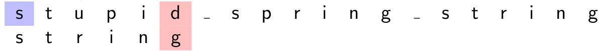
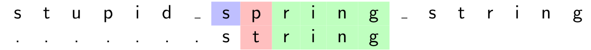

Recherche dans un texte¶
======
Danger
Ce cours n'a pas été entièrement reverifié après le passage du programme. Pensez à supprimer ce message si vous avez reverifié ce cours
Warning
Ce cours a été automatiquement traduit des transparents de M.Noyer par Lorentzo et Elowan et mis en forme par Mehdi, nous ne nous accordons en aucun cas son travail, ce site à pour seul but d’être plus compréhensible pendant les périodes de révision que des diaporamas.
Rappel de l’algorithme na¨ıf
Algorithme de Boyer-Moore
Boyer-Moore-Horspool
Algorithme de Rabin-Karp
Crédits¶
Pour Boyer-Moore :
Pour Rabin-Karp : Informatique -Cours et exercices corrigés- (MP2I-MPI) (ellipse)
Principe de la recherche¶
- Soit un texte écrit dans l’alphabet Σ
- Soit un autre texte (plus court) écrit dans le même alphabet : le motif
- On cherche le motif dans le texte et, en cas de présence constatée, on retourne la position de la première lettre de la première occurence du motif dans le texte.
- Nous dirons que le motif est présent à la position i si la lettre i du texte est égale à la lettre 0 du motif, la lettre i+1 du texte est égale à la lettre 1 du motif et ainsi de suite jusquà la dernière lettre du motif.
Différence avec la recherche de sous-tableau dans un tableau¶
- Le nombre de caractères dans l’alphabet est en général négligeable devant celle du texte exploré
- Cette propriété amène des optimisations inapplicables dans un contexte de tableau contenant un grand nombre de symboles différents.
Rappel de l'algorithme naïf¶
Conventions¶
- Soit s le texte et m le motif, |s| et |m| leurs longueurs. Soient k, r dans \([\![ 0,\left |\textsf s \right | ]\!]\). Les lettres sont numérotées à partir de 0.
- On applique les notation de slicing Python :
- s[i] est la lettre en position i
- s[−1] : dernière lettre de s (comprendre s[|s| − 1]).
- s[−k] : k-ième lettre de s en partant de la fin (comprendre s[|s| − k]).
- s[k : r ] est la sous-chaîne de s qui contient les lettres de la position k à r − 1. C’est la chaîne vide si r ≤ k
- s[: r ] est le préfixe de longueur r de s (lettres 0 à r − 1).
- s[: −k] est la sous-chaîne qui ne contient pas les k dernières lettres. Longueur |s| − k.
- s[k :] est le suffixe de s qui commence à la position k (toutes les lettres de s[k] incluse à la fin). C’est un mot de longueur |s| − k.
Principe¶
- On parcourt toutes les positions de s[: −(|m| −1)] et on fait glisser le motif de une case à chaque étape (on s’arrête dès que le motif "dépasse" du texte).
- Pour la position i, on regarde si le motif est présent à partir de cette position :
- Pour une position k dans le motif
- La lettre s[i + k] dans le texte doit être égale à la lettre m[k] dans le motif
- Si c’est le cas on passe à la position suivante dans le motif et le texte.
- Sinon, le motif n’est pas présent en position i, on recommence la recherche à la position i+1.
Code¶
Complexité au pire¶
La complexité au pire est obtenue lorsqu’on entre systématiquement dans la seconde boucle et qu’on explore les lettres du motif presque jusqu’au bout.
- s = an (n lettres) et \(m = a^{p-1}b ~~\)(p lettres)
- On explore les p lettres du motif pour chacune des n − p + 1 premières lettres du texte.
- Complexité au pire en \(\Theta-(n+1 -p)p)~\) Et \(\Theta(np)\) (si \(p < \frac{n}{2}\) par exemple).
Complexité¶
- Souvent, au bout d’une ou deux comparaisons, on peut invalider la position et passer à la suivante.
- Si le motif est présent à la fin du texte, on a une complexité en \(O(n+p)\) (où \(p\) comparaisons sont nécessaires pour vérifier une à une les lettres du motif).
- \(O(n+p) = O(n)\) si p ≤ n.
Algorithme de Boyer-Moore¶
Principe¶
- On parcourt le texte s du début à la fin mais on effectue parfois un décalage dépendant de la première comparaison négative (ce qui fait gagner du temps).
- Le motif m est recherché en commençant par la fin : on teste la présence de suffixes du motif de plus en plus gros. C’est le contraire de la méthode na¨ıve ou le motif est recherché en faisant grossir ses préfixes.
-
L’algorithme utilise un pré-traitement du motif afin de calculer le saut maximum à effectuer après avoir trouvé une non-concordance.
-
Exploration de la lettre i de s : on se demande si ce n’est pas la première lettre de m.
- On se place donc en position i + |m| − 1 de s (donc à droite de i). On explore les positions i + |m| − 1, i + |m| − 2 . . . dans le texte en comparant avec les positions −1, −2 etc.. du motif. On espère arriver sans encombre à la lettre i.
- Si on arrive sans erreur à la position i : on a trouvé le motif.
- Sinon, on a trouvé un suffixe xm' de s[: i+ |m|] (s tronqué à i + |m| − 1) tel que m'est un suffixe propre de m et pas xm'
- Si x n’est pas présent dans m, on reprend la recherche juste après x (pas la peine de perdre son temps à placer le motif avant le x du texte)
- si x est présent, on aligne le x de m le plus à droite et le x de s
Règle du mauvais caractère : exemple¶
On cherche string (m) dans le texte stupid spring string (s).
- Démarrage en position 0 de s.
 d et g ne correspondent pas en position 5 et il n’y a aucun d dans le motif. On passe à la position suivante 0 + |m| de s. -
Poursuite en position 6 de s :
 Le n et le g ne correspondent pas. Mais 1 cran à gauche de g, il y a un n dans le motif. On aligne donc le n du motif avec celui du texte.
Le n et le g ne correspondent pas. Mais 1 cran à gauche de g, il y a un n dans le motif. On aligne donc le n du motif avec celui du texte. -
Poursuite en position 6 + 1 de s :  Correspondance de 4 lettres. Mais p ne figure pas dans le motif. On décale le motif APRES ce p, donc de 2 positions. etc..
Table des sauts/occurences à droite¶
On veut chercher le motif abaa. Voici sa table des occurrences à droite :
occurrence la plus à droite 2 (on ne tient pas compte du dernier a) 1 ∅
Lettre a b Autres lettres On note dm(x) l’occurrence la plus à droite de x dans m. On veut chercher le motif abc. Voici sa table des occurrences à droite :
saut max 3-2 3-1 |m| = 4
Lettre a b Autres lettres dont c
occurrence la plus à droite 0 1 ∅
saut max 2-0 2-1 |m| = 3
Table des sauts
Lorsque la dernière lettre du motif (m[−1]) n’est pas présente ailleurs dans m (comme dans abcd mais pas abcb), le saut pour m[−1] est de |m|.
Il y a autant de lignes que dans l’alphabet. On peut préférer utiliser un dictionnaire, ce qui est économe en espace si le motif contient beaucoup moins de lettres que l’alphabet (songer à l’UTF16 !)
Attention
Jme suis arreter la
s : texte, m : motif, dm tableau des occurrences les plus à droite.¶
i est la position courante dans le texte (position à laquelle on espère trouver le premier caractère du motif). i ↑
j est la position de la lettre courante du motif. j ↓. On compare s[i + j] et m[j] comme dans l’algo na¨ıf. Supposons que s[i + j] (cid:54)= m[j] (sinon j est décrémenté) :
si dm(s[i + j]) = ∅, la recherche du motif ne sera pas satisfaite tant que ce caractère s[i + j] sera présent. On reprend la recherche en i + j + 1 si s[i + j] est dans le motif et dm(s[i + j]) ≥ j, cela signifie que s[i + j] est présent plus à droite que j dans le motif. Aligner cette occurrence ne permettrait pas d’avancer la recherche (cf figure 1). On reprend en i + 1. Si dm(s[i + j]) < j, le caractère s[i + j] est présent dans le motif à gauche de la position courante j. On "aligne" ce caractère du motif avec celui du texte. On reprend donc la recherche dans le texte en i' tel que i' + dm(s[i + j]) = i + j. Ainsi, la nouvelle position dans le texte est i' = i + (j − dm(s[i + j]).
Figure 1 : dm(s[i + j]) ≥ j¶
s[i + j] est dans le motif et dm(s[i + j]) ≥ j (dm(s[i + j]) est noté d) :
. . . . . i . . . (i+j) . . .
a ?
y z j
y d
pos. txt texte motif pos. motif
Décaler le motif de −(d − j) n’a pas d’intérêt car le point de départ dans le texte serait alors en i − d qui a déjà été inspecté et invalidé ! On se place donc en i + 1 : aucun gain par rapport à l’algorithme na¨ıf.
Figure 2 : 0 ≤ dm(s[i + j]) < j¶
dm : table des occurrences à droite. Posons d = dm(s[i + j]).
. . . . i . . . . . . . (i+j) . . . : pos. dans txt
a ?
0
: texte y x : motif m <------> Aucun y dans m[d+1:] : remarques
y z
j-d
d
j
(|m|-1)
: pos. dans motif
Nouveau point de départ en i + j − d (pour aligner les y ) :
. . . . i . . (i+j-d) . . . . (i+j) . . . . .
dec. =j-d dec. <j-d
b ?
?
y y y u
z
z
x
x
pos. dans txt
: : texte : motif (good) : motif (bad)
Prendre un décalage plus petit amène une lettre u (cid:54)= y sous y .
Terminaison Informelle¶
Dans la boucle externe, |s| − i est strictement décroissant et dans la boucle interne, c’est j qui est strictement décroissant.
On en déduit la terminaison
Correction Informelle¶
Par rapport à l’algo na¨ıf, on fait des sauts. Il suffit donc de s’assurer que les positions non explorées du fait des sauts ne conduisent pas à une solution. Un saut de 1 case n’est pas intéressant à étudier car il correspond à l’algo na¨ıf. On s’intéresse au cas i = 0 (pour simplifier) et à un saut de 2 cases au moins.
Il existe 3 caractères x, y , z (avec y (cid:54)= z) et des mots m, m, m, s, s (avec |m| ≥ 1) tels que m = m
mx et
m z
y dmy < j
j
s = s
y j
ms et y /∈ mzm.
Un décalage trop faible (donc inférieur à j − dm(y ) − 1) amène une lettre de m au niveau du y de yms. Or cette lettre de m est différente de y (voir transparent figure 2). D’où l’inutilité de décaler moins que j − dm(y ).
Complexité informelle¶
s texte, m motif
Si l’alphabet contient beaucoup de caractères (par exemple UTF8), on peut espérer que les motifs auront peu de répétitions. Chaque décalage sera donc en gros de |m|. En cas de recherche
infructueuse, on effectue environ
|s| |m|
comparaisons.
Exemple le pire m = bap− et s = an. Il faut, avant de faire un décalage, atteindre le b, soit p comparaisons. Et le décalage, obtenu en comparant a et b, est alors de 1 (car j = 0 < p − 1 = da). Comme pour l’algo na¨ıf, on a un nombre de comparaisons en
(n − p + 1)p = Θ(np) = Θ(|m| × |s|)
Algorithme ♥¶
Listing 2 – Table des sauts
∗
∗
− ∗
∗
|| − ∗ || − ∗
1 2 3 4 5 6 7 8 9 10 11 12 13 14 15 16 17 18 19 20 21 22 23 24 25 26 27 28 29 30 31 32 33 34 35 36 37 38 39 40 41 42 43 44 45 46 47 48 49 50 51 52 53 54 55 56 57 58 59 60 61 62 63 64 65 66 67 68 69 70 71 72 73 74 75 76 77 78 79 80 81 82 83 84 85 86 87 88 89 90 91 92 93 94 95 96 97 98 99 100 101 102 103 104 105 106 107 108 109 | |
Listing 4 – Rabin-Karp : recherche d’un motif
∗
∗
∗ ∗
|| ∗ ∗ ∗ ∗
−
||
||
Si on veut toutes les occurrences du motif, on crée une liste initialement vide positions puis :
On remplace la ligne 10 par : ajouter i à positions ; La dernière ligne devient : renvoyer positions
Complexité de la recherche de toutes les positions¶
On pose N = |s| (texte) ; M = |m| (motif)
Dans le meilleur cas, les comparaisons des hachés sont toujours négatives et on n’appelle jamais la fonction de comparaison de chaînes de caractères. Complexité au mieux en O(N + M) (O(M) pour les deux hachés initiaux -souvent M ≤ N−). Boyer-Moore complet (non vu cette année) peut faire encore mieux.
Le pire cas arrive quand le motif est présent à toutes les positions. Avec s = aN et m = aM , on doit faire une comparaisons de chaînes de caractères à chaque position dans le texte. Complexité en O(N(N − M + 1)) comme pour l’algorithme na¨ıf.
Cas de motifs multiples¶
On cherche un ensemble de motifs, tous de même longueur m
Listing 5 – Rabin-Karp : recherche de plusieurs motifs
∗ ∗ ∗ ∗ { | ∈ M} ∗
−
∗ ∗
∗
∗
∗
∈
∈
Pas si efficace pour la recherche d’un motif unique, il faut privilégier Rabin-Karp pour la recherche de plusieurs motifs.